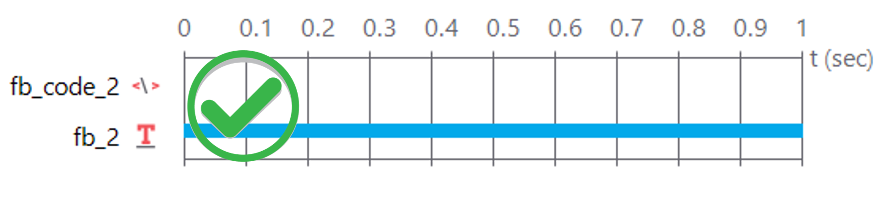
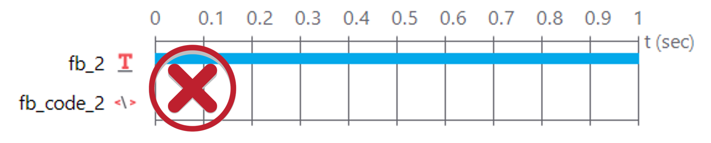
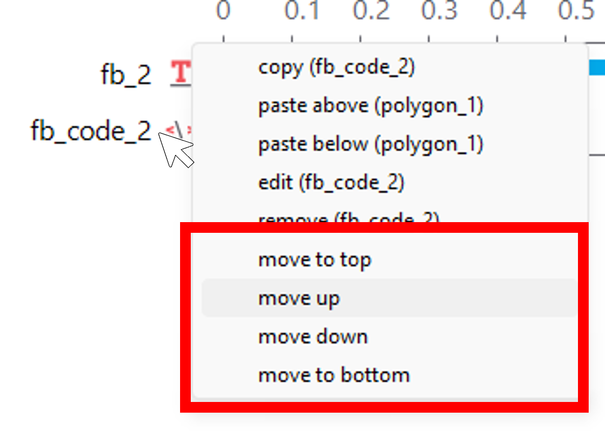

if key_resp.corr == 1:
fb_text = "Correct!"
fb_col ="green"
elif key_resp.corr == 0 and key_resp.keys != None:
fb_text = "Wrong!"
fb_col ="red"
elif key_resp.corr == 0 and key_resp.keys == None:
fb_text = "Too slow!"
fb_col ="black"First, download the Feedback.zip folder and unpack it, then open the folder and open the ‘SimonEffect_feedback.psyexp’ PsychoPy file.
In this experiment we are again increasing complexity but this time in an incremental fashion - we’ll be adding to the Simon Effect from the last experiment. If you run the experiment from scratch, you should see that it doesn’t work properly; it will always tell you that your answer is ‘incorrect’. You will need to fix the experiment as you make changes below. The idea is that after each trial you should be told whether or not you responded correctly. In this experiment we are starting to introduce some very basic code - if you’re not familiar with code don’t panic. We’ll introduce some simple snippets of code, and you won’t need to be an expert to make your own experiment do what you want.
What you learn
Things are getting a little more complicated but we hope playing around here will teach you the following:
- How to insert code components.
- How to modify basic code and even write some of your own.
- How to implement basic feedback.
- Introduction into troubleshooting.
Things to change
As we said the experiment is again looking at the Simon effect - there are 4 trials 2 congruent and 2 incongruent. But if you run the experiment you don’t get the appropriate feedback! Let’s make some changes so that it works and then experiment a bit further:
1. Try to get the feedback working!
You will need to tell PsychoPy what a correct answer is! You can do this in the trial routine, in the key_resp component.
The correct response can’t be static - rather you will have to reference to a column in the excel spreadsheet.
In the trial routine in the key_resp component, go to the Data tab and click Store correct. In the ‘Correct answer’ box type $answer. Then open the Excel file called trials add a new column with the heading answer in that column add the correct response expected for each trial. Save and close the excel document - reload it in the trials loop and run the experiment again.
2. Change the colour and text of the feedback to anything you want.
Locate the code component in the Feedback routine - open it up and see what you can understand.
In the code just try changing fb_text = and the fb_col= what colors does it recognise?
3. Modify the experiment so that you have a time limit to respond in - can you then modify the feedback so it says ‘Too slow!’ if no response was given? (this can be tricky).
This is a hard one - don’t give up yet; try googling… seriously, learning how to find the solution to a coding problem yourself by using the internet is a useful skill and can be really satisfying.
Ok, ok - I’ll help. Once you’ve set a timelimit on all components on the trial routine you’ll need to change some code. Instead of if key_resp.corr: try if key_resp.corr == 1. Then think about trying an elseif code line.
Still a bit tricky, I get it. You can use and in if functions, you can also use not but that’s expressed like != which effectively means ‘is not’.
Don’t give up! Try the PsychoPy forums first!
It’s a tricky one and if you haven’t coded before don’t feel to disheartened if you didn’t get it. You’ll need the following code in the Feedback routine in the fb_code_2 component in the Begin Routine tab, you can copy and paste from the code below to replace what’s currently there:
Caution
When you are adding code that will define the content of text stimuli, as in this experiment, it’s important that the code come before text component like this:

Not after, like this:

You can move any component up or down by right clicking on the component and selecting any of the ‘move’ options, like this:

Test yourself
Question 1 | In a code chunk, what is the name of the coding language used to programme PsychoPy?
Question 2 | What charachter is used to ‘comment out’ text?
When coding it’s good practice to annotate your code so other people find it easier to understand and you will remember what you did better. Leave comments in code chunks within PsychoPy by using ‘#’
Question 3 | What’s the name of the property that you need to change to increase the number of repetitions that a loop will go through?
If you need help - speak to instructors in class, check the online guide or contact a member of staff via email.